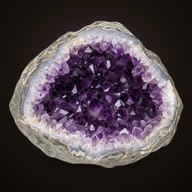

プライバシーポリシーいしほり（旧すなほり）/ Stone Cabinet (formerly Oddly Ashore)
制定・最終更新：2026年9月29日
集める情報
このアプリは、お名前・メールアドレス・位置情報・連絡先・端末の識別子などの個人情報を集めません。アカウント登録、広告、行動の分析・追跡の仕組みはありません。
端末の中に保存する情報
見つけた石、標本箱、採掘回数、設定などの遊びの記録は、お使いの端末の中にだけ保存されます。開発者のサーバーには送られません。アプリを削除すると、この記録も削除されます。
購入
アプリ内購入の手続きは Apple が行います。開発者がお支払い情報を受け取ることはありません。購入の確認は、端末の中で Apple の仕組み（StoreKit）を使って行います。
通知
通知を許可した場合だけ、「無料の回数が戻った」などのお知らせを端末の中で予約して表示します。通知のために情報を外部へ送ることはありません。
共有と書き出し
標本や標本箱の画像の共有、記録の書き出しは、あなたが操作したときだけ行われ、iPhone の共有画面であなたが選んだ先にだけ送られます。
お子さまについて
このアプリはどなたの個人情報も集めないため、お子さまの個人情報を集めることもありません。
このポリシーの変更
内容を変えるときは、このページを更新し、日付を改めます。
お問い合わせ
Effective and last updated: September 29, 2026
What we collect
This app does not collect personal information such as your name, email address, location, contacts or device identifiers. There are no accounts, no ads, and no analytics or tracking.
What stays on your device
Your finds, cabinets, digs and settings are stored only on your device. They are never sent to the developer. Deleting the app deletes this data.
Purchases
In-app purchases are handled by Apple. The developer never receives your payment details. Purchases are checked on your device using Apple's StoreKit.
Notifications
Only if you allow notifications, the app schedules reminders (for example, when free digs are back) on your device. Nothing is sent anywhere for this.
Sharing and export
Sharing a picture of a specimen or cabinet, or exporting your records, happens only when you choose to, and goes only where you send it from the iPhone share sheet.
Children
Because the app collects no personal information from anyone, it collects none from children.
Changes
If this policy changes, this page will be updated with a new date.